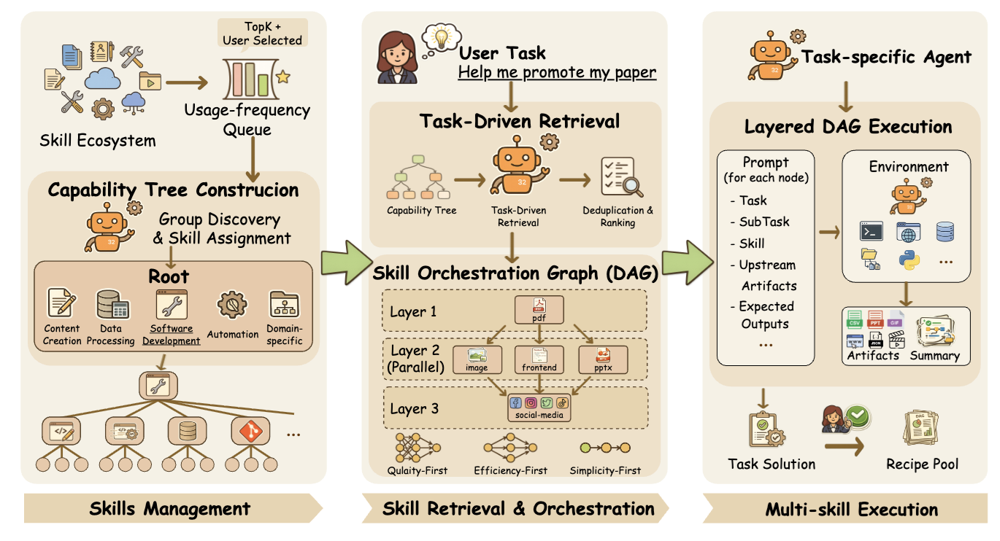
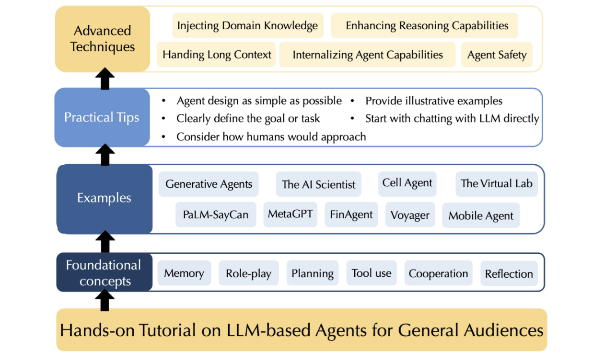
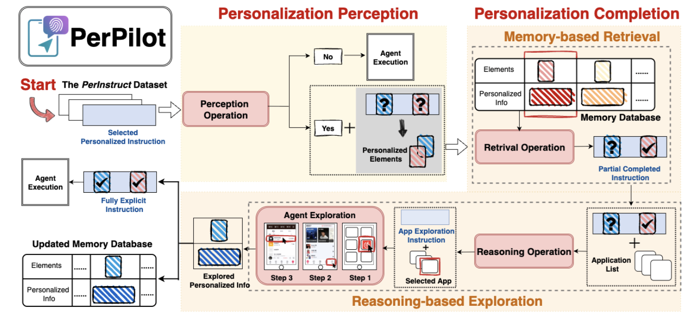
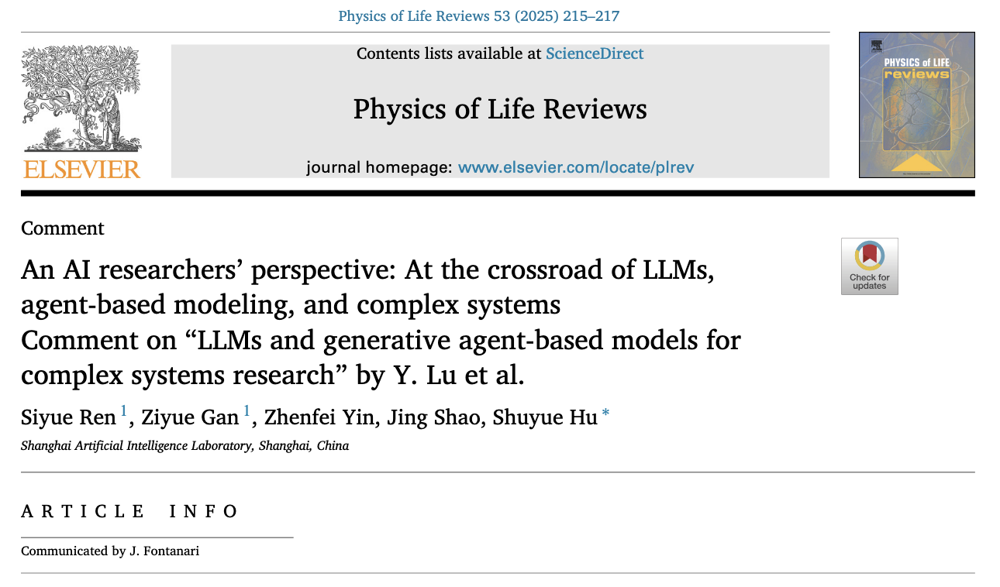
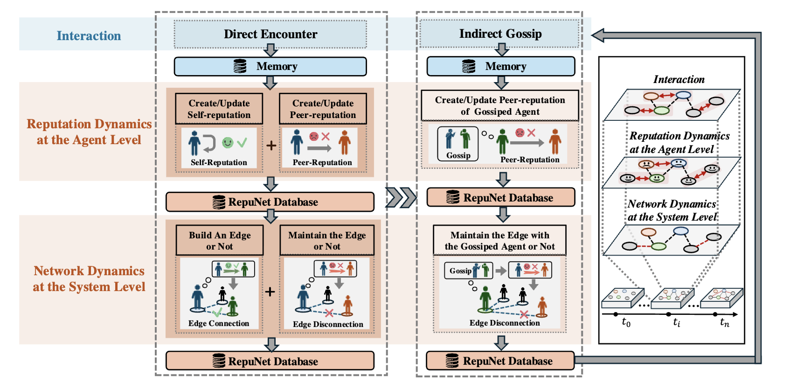
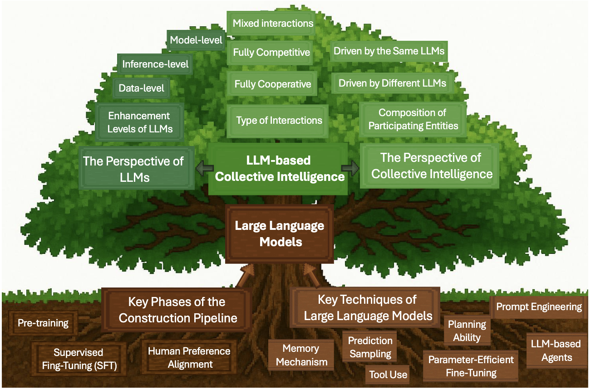
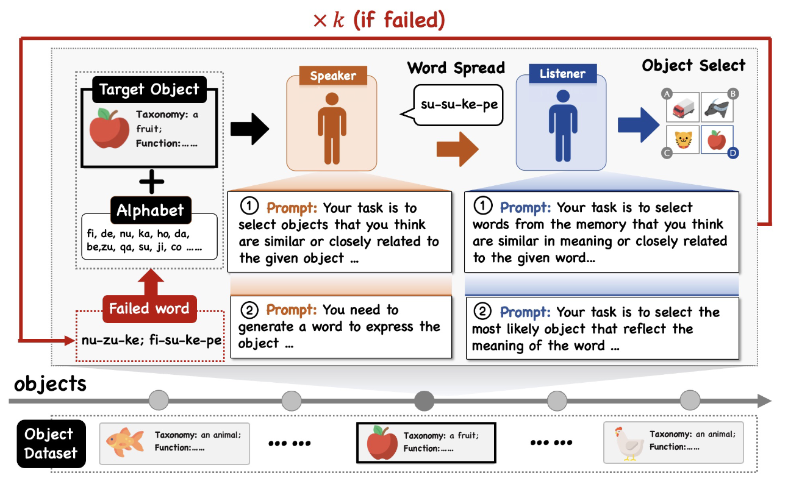
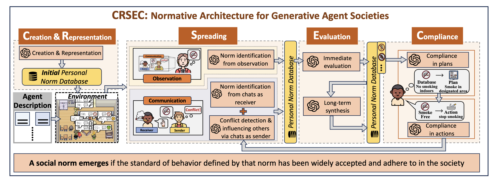

About Me
👋Hi!
I'm Siyue, a Ph.D. candidate at Northwestern Polytechnical University in Xi’an, China, advised by Prof. Zhen Wang and Dr. Shuyue Hu . My research explores the intersection of multi-agent systems (MASs), large language models (LLMs), and game theory, with a particular focus on cooperative behaviors in LLM-based agent societies and human-AI interaction.
Prior to this, I received my bachelor’s degree from Northwestern Polytechnical University in 2022. From 2023 to 2026, I was also a research intern at Shanghai Artificial Intelligence Laboratory, advised by Dr. Shuyue Hu.
My Ph.D. thesis focuses on the emergence and evolution of social norms in MASs, and I expect to complete my degree in late 2027. I am actively seeking future postdoctoral opportunities and research collaborations in cooperative AI, LLM-based MASs, and human-AI interaction. I would be very happy to connect with researchers working on related topics. Please feel free to reach out, and see my CV for more details.
🔥What's new:
May 2026
I will attend AAMAS 2026 in Paphos, Cyprus🇨🇾, and present our work on May 29.
Looking forward to meeting you there!
May 2026
Our paper, “Reputation as a Solution to Cooperation Collapse in LLM-based MASs,”
was nominated for the Best Student Paper Award at AAMAS 2026!
March 2026
Our paper, “CraftUtopia: A LLM-based Multi-Agent System for Collaborative Construction in Minecraft,”
was accepted to the Demo Track of AAMAS 2026!
December 2025
Our paper, “Reputation as a Solution to Cooperation Collapse in LLM-based MASs,”
was accepted to AAMAS 2026!
July 2025
Our comment, “An AI Researchers’ Perspective: At the Crossroad of LLMs, Agent-Based Modeling, and Complex Systems,”
was accepted to Physics of Life Reviews!
August 2024
I attended IJCAI 2024 in Jeju, South Korea🇰🇷, and presented our work in both oral and poster sessions!
May 2024
Our paper, “Emergence of Social Norms in Generative Agent Societies: Principles and Architecture,”
was accepted to the HAI Track of IJCAI 2024 with an acceptance rate of 4%.
📖Publications
You can find an updated list of publications here.
2026
2025



An AI Researchers' Perspective: At the Crossroad of LLMs, Agent-Based Modeling, and Complex Systems: Comment on "LLMs and Generative Agent-Based Models for Complex Systems Research" by Y. Lu et al.
Comment on Physics of Life Reviews


A Comprehensive Survey of LLM-Driven Collective Intelligence: Past, Present, and Future
Preprint 2025

2024

🌐Academic Services & Activities
Subreviewer for Conferences
- International Joint Conference on Artificial Intelligence (IJCAI), since 2024
- International Conference on Autonomous Agents and Multiagent Systems (AAMAS), since 2024
- Annual AAAI Conference on Artificial Intelligence (AAAI), since 2024
- European Conference on Artificial Intelligence (ECAI), 2025
- Distributed AI (DAI), 2025
- Pacific Rim International Conference on Artificial Intelligence (PRICAI), 2023
Subreviewer for Journals
- Humanities and Social Sciences Communications, 2025